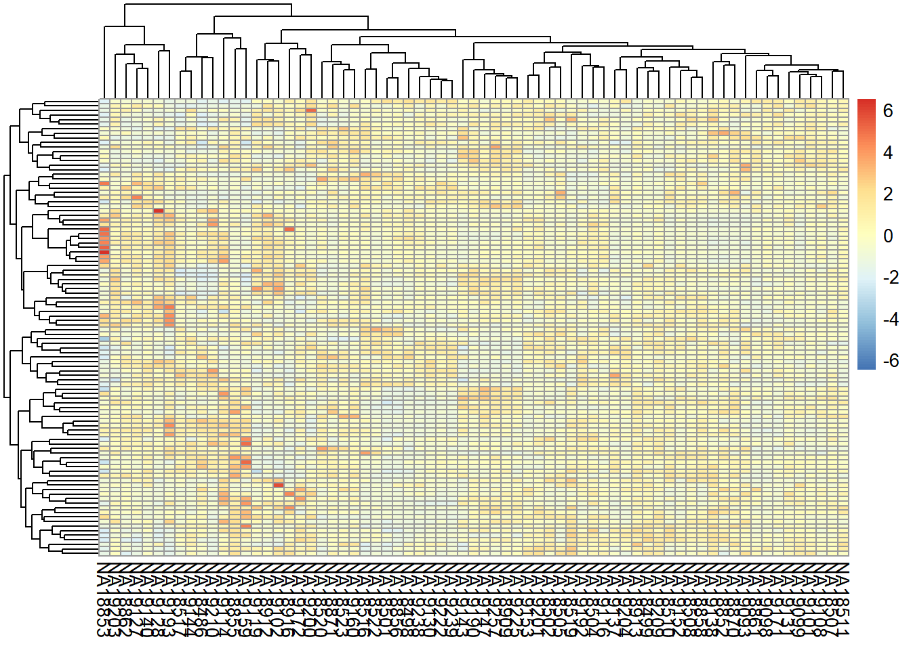

6 RNAseq data analysis
In this chapter we will assume that the data analyst has obtained a read count table from raw fastq reads obtained from an Illumina sequencing run. This can also be performed using Bioconductor R packages, but sometimes you can ask the core facility for this data since it can be very computational expensive. Here we demonstrate how to process the count table, make a case-control differential expression analysis, and do some downstream functional enrichment analysis that can also be applied to the results obtained from microarrays experiments.
6.1 Introduction
The transcription profile of a particular gene follows from counting the number of times the transcripts of the genes were mapped by sequenced reads. The summarized RNA-seq data is known as count data. Figure 6.1 describes the main steps that are taken to obtain the count table that measures the transcription of active genes in biological samples.

Figure 6.1: RNA-seq scheme to get count data.
The sequenced reads can be counted in a number of different ways:
- By alignment to the genome and summarized at either gene or transcript (isoform) level.
- By alignment to the transcriptome and summarized at either gene or transcript (isoform) level.
- By assembling directly into transcripts and summarized at either gene or transcript (isoform) level.
Table 6.2 shows a hypothetical RNA-seq data of \(G\) genes obtained for 6 samples, belonging to two different conditions. The main goal is to discover the genes that are differentially expressed between individuals from condition A and B.

Figure 6.2: Table of counts for an hypotethical data example.
In RNA-seq analysis, we deal with the number of reads (counts) that map to the biological feature of interest (gene, transcript, exon, etc.). The count number depends linearly with the abundance of the target’s transcription because the sequencing of RNA is a direct measure of transcription. This is considered as one of the advantages over microarrays that indirectly measure transcription by hybridization. Figure 6.3 illustrates the type of data from microarray and RNA-seq experiments. While microarray data is continuous, RNA-seq is discrete and, therefore, the modeling of each type of data is different.
Figure 6.3: Gene expression distribution obtained from RNA-seq and microarray data from a hypothetical gene.
There are two important factors that influence the number of gene counts and which need to be taken into account, see figure 6.4. The first factor is the sequencing depth or library size, that is, the total number of reads mapped to the genome; the second factor is the gene length, i.e. the number of bases covering a gene. It is expected that larger genes, for a given level of transcription, will have more gene counts.
Figure 6.4: Key concepts involved in an RNA-seq experiment.
6.2 Within sample normalization of read counts
The most common application after a gene’s expression is quantified (as the number of reads aligned to the gene), is to compare the gene’s expression in different conditions, for instance, in a case-control setting (e.g. disease versus normal) or in a time-series (e.g. along different developmental stages). Making such comparisons helps identify the genes that might be responsible for a disease or an impaired developmental trajectory. However, there are multiple caveats that needs to be addressed before making a comparison between the read counts of a gene in different conditions (Maza, et al. 2013).
Library size (i.e. sequencing depth) varies between samples coming from different lanes of the flow cell of the sequencing machine. Longer genes will have a higher number of reads. Library composition (i.e. relative size of the studied transcriptome) can be different in two different biological conditions. GC content biases across different samples may lead to a biased sampling of genes.
The most basic normalization approaches address the sequencing depth bias. Such procedures normalize the read counts per gene by dividing each gene’s read count by a certain value and multiplying it by \(10^6\). These normalized values are usually referred to as CPM (counts per million reads):
- Total Counts Normalization (divide counts by the sum of all counts)
- Upper Quartile Normalization (divide counts by the upper quartile value of the counts)
- Median Normalization (divide counts by the median of all counts)
Popular metrics that improve upon CPM are RPKM/FPKM (reads/fragments per kilobase of million reads) and TPM (transcripts per million). RPKM is obtained by dividing the CPM value by another factor, which is the length of the gene per kilobase. FPKM is the same as RPKM, but is used for paired-end reads. Thus, RPKM/FPKM methods account for, firstly, the library size, and secondly, the gene lengths.
TPM also controls for both the library size and the gene lengths, however, with the TPM method, the read counts are first normalized by the gene length (per kilobase), and then gene-length normalized values are divided by the sum of the gene-length normalized values and multiplied by \(10^6\). Thus, the sum of normalized values for TPM will always be equal to \(10^6\) for each library, while the sum of RPKM/FPKM values do not sum to \(10^6\). Therefore, it is easier to interpret TPM values than RPKM/FPKM values.
Other methods that consider GC content are: cqn (Hansen and Irizarry, 2012), EDAseq (Risso, et al. 2011).
We demonstrate different methods to normalize the count data from lymphoblastoid cell lines from 69 unrelated Nigerian individuals, described in Pickrell, et al. 2010. This data are available through the Bioconductor’s tweeDEseqCountData package.
## Loading required package: Biobase## Loading required package: BiocGenerics## Loading required package: parallel##
## Attaching package: 'BiocGenerics'## The following objects are masked from 'package:parallel':
##
## clusterApply, clusterApplyLB, clusterCall, clusterEvalQ,
## clusterExport, clusterMap, parApply, parCapply, parLapply,
## parLapplyLB, parRapply, parSapply, parSapplyLB## The following objects are masked from 'package:stats':
##
## IQR, mad, sd, var, xtabs## The following objects are masked from 'package:base':
##
## anyDuplicated, append, as.data.frame, basename, cbind, colnames,
## dirname, do.call, duplicated, eval, evalq, Filter, Find, get, grep,
## grepl, intersect, is.unsorted, lapply, Map, mapply, match, mget,
## order, paste, pmax, pmax.int, pmin, pmin.int, Position, rank,
## rbind, Reduce, rownames, sapply, setdiff, sort, table, tapply,
## union, unique, unsplit, which, which.max, which.min## Welcome to Bioconductor
##
## Vignettes contain introductory material; view with
## 'browseVignettes()'. To cite Bioconductor, see
## 'citation("Biobase")', and for packages 'citation("pkgname")'.## ExpressionSet (storageMode: lockedEnvironment)
## assayData: 52580 features, 69 samples
## element names: exprs
## protocolData: none
## phenoData
## sampleNames: NA18486 NA18498 ... NA19257 (69 total)
## varLabels: num.tech.reps population study gender
## varMetadata: labelDescription
## featureData
## featureNames: ENSG00000000003 ENSG00000000005 ... LRG_99 (52580
## total)
## fvarLabels: gene
## fvarMetadata: labelDescription
## experimentData: use 'experimentData(object)'
## Annotation:The object pickrell.est is an ExpressionSet containing RNA-seq count data obtained from the ReCount repository available at . Details on the pre-processing steps to obtain this table of counts from the raw reads are provided on the website and in Frazee, et al. 2011.
Our aim is to use this data to compare different normalization methods. The most simple normalization is to standardize the counts dividing them by the total number of reads in the sample (size of the libraries) and multiplying by \(10^6\) (CPM):
counts <- exprs(pickrell.eset)
lib.size <- colSums(counts)
NormByCPM <- sweep(counts, 2, FUN="/", lib.size) * 10^6Check that the sum of each column after CPM normalization equals to \(10^6\)
## NA18486 NA18498 NA18499 NA18501 NA18502 NA18504 NA18505 NA18507 NA18508 NA18510
## 1e+06 1e+06 1e+06 1e+06 1e+06 1e+06 1e+06 1e+06 1e+06 1e+06
## NA18511 NA18516 NA18517 NA18519 NA18520 NA18522 NA18523 NA18852 NA18853 NA18855
## 1e+06 1e+06 1e+06 1e+06 1e+06 1e+06 1e+06 1e+06 1e+06 1e+06
## NA18856 NA18858 NA18861 NA18862 NA18870 NA18871 NA18909 NA18912 NA18913 NA18916
## 1e+06 1e+06 1e+06 1e+06 1e+06 1e+06 1e+06 1e+06 1e+06 1e+06
## NA19093 NA19098 NA19099 NA19101 NA19102 NA19108 NA19114 NA19116 NA19119 NA19127
## 1e+06 1e+06 1e+06 1e+06 1e+06 1e+06 1e+06 1e+06 1e+06 1e+06
## NA19128 NA19130 NA19131 NA19137 NA19138 NA19140 NA19143 NA19144 NA19147 NA19152
## 1e+06 1e+06 1e+06 1e+06 1e+06 1e+06 1e+06 1e+06 1e+06 1e+06
## NA19153 NA19159 NA19160 NA19171 NA19172 NA19190 NA19192 NA19193 NA19200 NA19201
## 1e+06 1e+06 1e+06 1e+06 1e+06 1e+06 1e+06 1e+06 1e+06 1e+06
## NA19203 NA19204 NA19209 NA19210 NA19222 NA19225 NA19238 NA19239 NA19257
## 1e+06 1e+06 1e+06 1e+06 1e+06 1e+06 1e+06 1e+06 1e+06For an RPKM (reads per kilobase of transcript and million mapped reads) normalization, we first need to know the length of query regions (e.g. length of genes). This information is also available from the tweeDEseqCountData package, but can also be obtained from biomaRt.
## Symbol Chr Start End EntrezID
## ENSG00000252775 U7 5 133913821 133913880 <NA>
## ENSG00000207459 U6 5 133970529 133970635 <NA>
## ENSG00000252899 U7 5 133997420 133997479 <NA>
## ENSG00000201298 U6 5 134036862 134036968 <NA>
## ENSG00000222266 U6 5 134051173 134051272 <NA>
## ENSG00000222924 U6 5 137405044 137405147 <NA>
## Description Length
## ENSG00000252775 U7 small nuclear RNA [Source:RFAM;Acc:RF00066] NA
## ENSG00000207459 U6 spliceosomal RNA [Source:RFAM;Acc:RF00026] NA
## ENSG00000252899 U7 small nuclear RNA [Source:RFAM;Acc:RF00066] NA
## ENSG00000201298 U6 spliceosomal RNA [Source:RFAM;Acc:RF00026] NA
## ENSG00000222266 U6 spliceosomal RNA [Source:RFAM;Acc:RF00026] NA
## ENSG00000222924 U6 spliceosomal RNA [Source:RFAM;Acc:RF00026] NA
## GCcontent
## ENSG00000252775 NA
## ENSG00000207459 NA
## ENSG00000252899 NA
## ENSG00000201298 NA
## ENSG00000222266 NA
## ENSG00000222924 NAgenes.ok <- intersect(as.character(rownames(counts)),
as.character(rownames(annotEnsembl63)))
geneAnnot <- annotEnsembl63[genes.ok,]
counts.ok <- counts[genes.ok,]
identical(rownames(geneAnnot), rownames(counts.ok))## [1] TRUEWe obtain annotation data in the object annotEnsembl63 and map it to counts, we then check that both data.frame are in the same order. The RPKM normalization is computed by
geneLengths <- geneAnnot$Length
NormByRPKM <- t(t(counts.ok / geneLengths *10^3)
/colSums(counts.ok)*10^6)Check that the sum of each column after RPKM normalization is not equal to \(10^6\)
## NA18486 NA18498 NA18499 NA18501 NA18502 NA18504 NA18505 NA18507
## 446915.7 468875.1 451749.9 424849.8 465086.6 462163.4 461488.9 474510.7
## NA18508 NA18510 NA18511 NA18516 NA18517 NA18519 NA18520 NA18522
## 461575.7 463082.1 469532.5 494144.4 453952.3 465812.3 475356.5 450742.2
## NA18523 NA18852 NA18853 NA18855 NA18856 NA18858 NA18861 NA18862
## 465948.1 449445.6 541396.1 458492.5 446573.0 461737.2 419591.0 481777.5
## NA18870 NA18871 NA18909 NA18912 NA18913 NA18916 NA19093 NA19098
## 464991.6 448378.9 487215.0 529199.2 471316.9 447690.0 436454.4 436349.0
## NA19099 NA19101 NA19102 NA19108 NA19114 NA19116 NA19119 NA19127
## 428527.4 450986.4 539169.3 464412.9 552272.0 452169.8 488080.0 533040.2
## NA19128 NA19130 NA19131 NA19137 NA19138 NA19140 NA19143 NA19144
## 565341.8 460997.0 459320.6 451752.3 425970.4 503160.3 462846.1 440995.7
## NA19147 NA19152 NA19153 NA19159 NA19160 NA19171 NA19172 NA19190
## 512702.4 462656.1 443485.7 435608.1 483709.9 428850.3 459705.1 491931.6
## NA19192 NA19193 NA19200 NA19201 NA19203 NA19204 NA19209 NA19210
## 465900.2 567158.2 439382.1 465267.3 512908.7 424076.6 468026.6 491900.9
## NA19222 NA19225 NA19238 NA19239 NA19257
## 440928.6 510870.3 455355.5 439798.3 498785.3#find gene length normalized values
rpk <- apply(counts.ok, 2,
function(x) x/(geneLengths/10^3))
#normalize by the sample size using rpk values
NormByTPM <- apply(rpk, 2,
function(x) x / sum(as.numeric(x), na.rm=TRUE) * 10^6)Check that the sum of each column after RPM normalization equals to \(10^6\)
## NA18486 NA18498 NA18499 NA18501 NA18502 NA18504 NA18505 NA18507 NA18508 NA18510
## 1e+06 1e+06 1e+06 1e+06 1e+06 1e+06 1e+06 1e+06 1e+06 1e+06
## NA18511 NA18516 NA18517 NA18519 NA18520 NA18522 NA18523 NA18852 NA18853 NA18855
## 1e+06 1e+06 1e+06 1e+06 1e+06 1e+06 1e+06 1e+06 1e+06 1e+06
## NA18856 NA18858 NA18861 NA18862 NA18870 NA18871 NA18909 NA18912 NA18913 NA18916
## 1e+06 1e+06 1e+06 1e+06 1e+06 1e+06 1e+06 1e+06 1e+06 1e+06
## NA19093 NA19098 NA19099 NA19101 NA19102 NA19108 NA19114 NA19116 NA19119 NA19127
## 1e+06 1e+06 1e+06 1e+06 1e+06 1e+06 1e+06 1e+06 1e+06 1e+06
## NA19128 NA19130 NA19131 NA19137 NA19138 NA19140 NA19143 NA19144 NA19147 NA19152
## 1e+06 1e+06 1e+06 1e+06 1e+06 1e+06 1e+06 1e+06 1e+06 1e+06
## NA19153 NA19159 NA19160 NA19171 NA19172 NA19190 NA19192 NA19193 NA19200 NA19201
## 1e+06 1e+06 1e+06 1e+06 1e+06 1e+06 1e+06 1e+06 1e+06 1e+06
## NA19203 NA19204 NA19209 NA19210 NA19222 NA19225 NA19238 NA19239 NA19257
## 1e+06 1e+06 1e+06 1e+06 1e+06 1e+06 1e+06 1e+06 1e+06None of these metrics (CPM, RPKM/FPKM, TPM) account for the other important confounding factor when comparing expression levels of genes across samples: the library composition, which may also be referred to as the relative size of the compared transcriptomes. This factor is not dependent on the sequencing technology, it is rather biological. For instance, when comparing transcriptomes of different tissues, there can be sets of genes in one tissue that consume a big chunk of the reads, while in the other tissues they are not expressed at all. This kind of imbalance in the composition of compared transcriptomes can lead to wrong conclusions about which genes are actually differentially expressed. This consideration is addressed in two popular R packages: DESeq2 (Love, Huber, and Anders 2014) and edgeR (Robinson, McCarthy, and Smyth 2010) each with a different algorithm. edgeR uses a normalization procedure called Trimmed Mean of M-values (TMM). DESeq2 implements a normalization procedure using median of Ratios, which is obtained by finding the ratio of the log-transformed count of a gene divided by the average of log-transformed values of the gene in all samples (geometric mean), and then taking the median of these values for all genes. The raw read count of the gene is finally divided by this value (median of ratios) to obtain the normalized counts.
The DESeq2 normalization is automatically performed when using DESeq2 package (we will see it later). We now apply a TMM (trimmed mean of M-values) normalization which, as previously mentioned, was developed to correct the gene counts by the expression properties of the whole sample. The TMM normalization method is implemented in the Bioconductor’s tweeDEseq package and can be performed by:
## Using edgeR-TMM normalization.## Calculating normalization factors with the TMM method.## Estimating common dispersion.## Estimating tagwise dispersions.## Calculating effective library sizes.## Adjusting counts to effective library sizes using tagwise dispersions.Another type of normalization is CQN, available in the package cqn. It requires different steps that have been encapsulated in the function called normalizeCounts () from tweeDEseq. The function requires the length and the percentage of GC-content of each gene.
## Loading required package: mclust## Package 'mclust' version 5.4.6
## Type 'citation("mclust")' for citing this R package in publications.## Loading required package: nor1mix## Loading required package: preprocessCore## Loading required package: splines## Loading required package: quantreg## Warning: package 'quantreg' was built under R version 4.0.3## Loading required package: SparseM##
## Attaching package: 'SparseM'## The following object is masked from 'package:base':
##
## backsolveannotation <- geneAnnot[,c("Length", "GCcontent")]
NormByCQN <- normalizeCounts(counts.ok, method="cqn",
annot=annotation)## Using cqn normalization.## RQ fit .....................................................................
## SQN## Warning: The use of 'sig2' is deprecated; do specify 'sigma' (= sqrt(sig2))
## instead## .We now compare the performance of each normalization method. Assuming that between two samples, most genes are not differentially expressed, the distribution of the difference of log-ratios between the samples should be centered around 0 when data is correctly normalized. We thus examine the distributions for the 1st and 2nd sample under normalization by the total number of reads and by RPKM (Figure (fig:checkNorm):

Figure 6.5: Comparison of log-ratio count intensity of samples 1 and 2 from the Pickrell dataset.
Figure 6.5, however, does not show whether the null difference between samples holds for different levels of gene expression. With a MA-plot, one can check whether data has been correctly normalized at any expression level. The MA-plot is available from the Bioconductor package edgeR. The resulting plot can be seen in Figure ?? (top left part). In the X-axis the plot shows the mean between the log-ratios. In the Y-axis the plot shows the difference of log-ratios between the samples, similar to figure 6.5. The MA-plot is, therefore, the difference against the mean of the gene counts between the two samples. The red line shows the expected M-values as a function of A-values. In our example of non-normalized data, we can see that for genes with low counts the distribution of the difference between samples is not zero; in particular, we observe that sample 2 has more counts than sample 1.
6.3 Exploratory analysis of the read counts table
A typical quality control, in this case interrogating the RNA-seq experiment design, is to measure the similarity of the samples with each other in terms of the quantified expression level profiles across a set of genes. One important observation to make is to see whether the most similar samples to any given sample are the biological replicates of that sample. This can be computed using unsupervised clustering techniques such as hierarchical clustering and visualized as a heatmap with dendrograms. Another most commonly applied technique is a dimensionality reduction technique called Principal Component Analysis (PCA) and visualized as a two-dimensional (or in some cases three-dimensional) scatter plot.
6.3.1 Clustering
We can combine clustering and visualization of the clustering results by using heatmap functions that are available in a variety of R libraries. The basic R installation comes with the stats::heatmap () function. However, there are other libraries available in CRAN (e.g. pheatmap) or Bioconductor (e.g. ComplexHeatmap) that come with more flexibility and more appealing visualizations.
Here we demonstrate a heatmap using the pheatmap package and the previously calculated NormByTPM matrix. As these matrices can be quite large, both computing the clustering and rendering the heatmaps can take a lot of resources and time. Therefore, a quick and informative way to compare samples is to select a subset of genes that are, for instance, most variable across samples, and use that subset to do the clustering and visualization.
Let’s select the top 100 most variable genes among the samples.
#compute the variance of each gene across samples
V <- apply(NormByTPM, 1, var)
#sort the results by variance in decreasing order
#and select the top 100 genes
selectedGenes <- names(V[order(V, decreasing = T)][1:100])Now we can quickly produce a heatmap where samples and genes are clustered (see Figure @ref{fig:clust}).
## Warning: package 'pheatmap' was built under R version 4.0.3